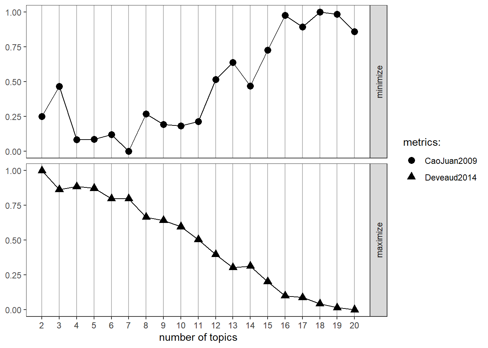
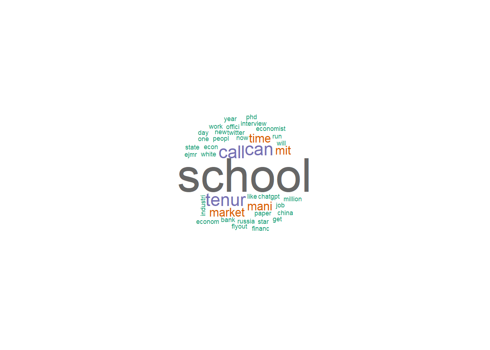
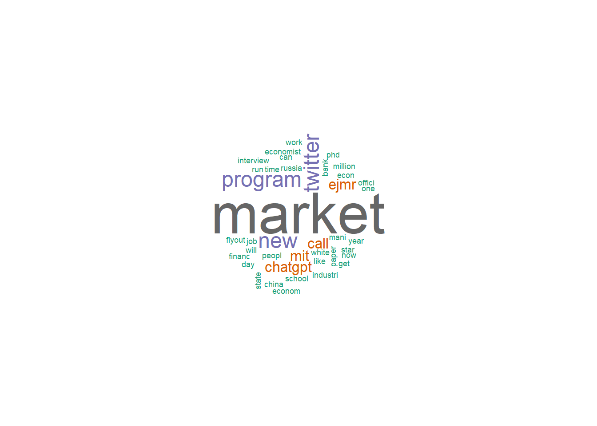
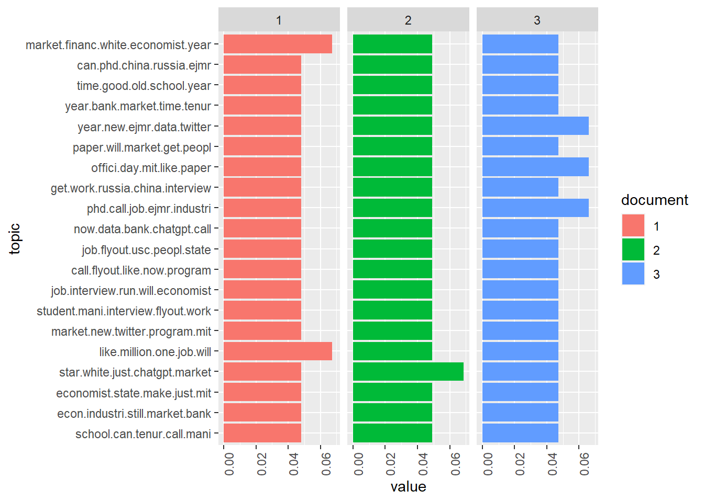

<!DOCTYPE html>
<html xmlns="http://www.w3.org/1999/xhtml" lang="en" xml:lang="en"><head>

<meta charset="utf-8">
<meta name="generator" content="quarto-1.0.37">

<meta name="viewport" content="width=device-width, initial-scale=1.0, user-scalable=yes">

<meta name="author" content="Jyoti Rani">
<meta name="dcterms.date" content="2022-12-23">

<title>- Final Project</title>
<style>
code{white-space: pre-wrap;}
span.smallcaps{font-variant: small-caps;}
span.underline{text-decoration: underline;}
div.column{display: inline-block; vertical-align: top; width: 50%;}
div.hanging-indent{margin-left: 1.5em; text-indent: -1.5em;}
ul.task-list{list-style: none;}
pre > code.sourceCode { white-space: pre; position: relative; }
pre > code.sourceCode > span { display: inline-block; line-height: 1.25; }
pre > code.sourceCode > span:empty { height: 1.2em; }
.sourceCode { overflow: visible; }
code.sourceCode > span { color: inherit; text-decoration: inherit; }
div.sourceCode { margin: 1em 0; }
pre.sourceCode { margin: 0; }
@media screen {
div.sourceCode { overflow: auto; }
}
@media print {
pre > code.sourceCode { white-space: pre-wrap; }
pre > code.sourceCode > span { text-indent: -5em; padding-left: 5em; }
}
pre.numberSource code
  { counter-reset: source-line 0; }
pre.numberSource code > span
  { position: relative; left: -4em; counter-increment: source-line; }
pre.numberSource code > span > a:first-child::before
  { content: counter(source-line);
    position: relative; left: -1em; text-align: right; vertical-align: baseline;
    border: none; display: inline-block;
    -webkit-touch-callout: none; -webkit-user-select: none;
    -khtml-user-select: none; -moz-user-select: none;
    -ms-user-select: none; user-select: none;
    padding: 0 4px; width: 4em;
    color: #aaaaaa;
  }
pre.numberSource { margin-left: 3em; border-left: 1px solid #aaaaaa;  padding-left: 4px; }
div.sourceCode
  {   }
@media screen {
pre > code.sourceCode > span > a:first-child::before { text-decoration: underline; }
}
code span.al { color: #ff0000; font-weight: bold; } /* Alert */
code span.an { color: #60a0b0; font-weight: bold; font-style: italic; } /* Annotation */
code span.at { color: #7d9029; } /* Attribute */
code span.bn { color: #40a070; } /* BaseN */
code span.bu { } /* BuiltIn */
code span.cf { color: #007020; font-weight: bold; } /* ControlFlow */
code span.ch { color: #4070a0; } /* Char */
code span.cn { color: #880000; } /* Constant */
code span.co { color: #60a0b0; font-style: italic; } /* Comment */
code span.cv { color: #60a0b0; font-weight: bold; font-style: italic; } /* CommentVar */
code span.do { color: #ba2121; font-style: italic; } /* Documentation */
code span.dt { color: #902000; } /* DataType */
code span.dv { color: #40a070; } /* DecVal */
code span.er { color: #ff0000; font-weight: bold; } /* Error */
code span.ex { } /* Extension */
code span.fl { color: #40a070; } /* Float */
code span.fu { color: #06287e; } /* Function */
code span.im { } /* Import */
code span.in { color: #60a0b0; font-weight: bold; font-style: italic; } /* Information */
code span.kw { color: #007020; font-weight: bold; } /* Keyword */
code span.op { color: #666666; } /* Operator */
code span.ot { color: #007020; } /* Other */
code span.pp { color: #bc7a00; } /* Preprocessor */
code span.sc { color: #4070a0; } /* SpecialChar */
code span.ss { color: #bb6688; } /* SpecialString */
code span.st { color: #4070a0; } /* String */
code span.va { color: #19177c; } /* Variable */
code span.vs { color: #4070a0; } /* VerbatimString */
code span.wa { color: #60a0b0; font-weight: bold; font-style: italic; } /* Warning */
</style>


<script src="../site_libs/quarto-nav/quarto-nav.js"></script>
<script src="../site_libs/quarto-nav/headroom.min.js"></script>
<script src="../site_libs/clipboard/clipboard.min.js"></script>
<script src="../site_libs/quarto-search/autocomplete.umd.js"></script>
<script src="../site_libs/quarto-search/fuse.min.js"></script>
<script src="../site_libs/quarto-search/quarto-search.js"></script>
<meta name="quarto:offset" content="../">
<link href="../images/DACSS_Round_Network.png" rel="icon" type="image/png">
<script src="../site_libs/quarto-html/quarto.js"></script>
<script src="../site_libs/quarto-html/popper.min.js"></script>
<script src="../site_libs/quarto-html/tippy.umd.min.js"></script>
<script src="../site_libs/quarto-html/anchor.min.js"></script>
<link href="../site_libs/quarto-html/tippy.css" rel="stylesheet">
<link href="../site_libs/quarto-html/quarto-syntax-highlighting.css" rel="stylesheet" class="quarto-color-scheme" id="quarto-text-highlighting-styles">
<link href="../site_libs/quarto-html/quarto-syntax-highlighting-dark.css" rel="prefetch" class="quarto-color-scheme quarto-color-alternate" id="quarto-text-highlighting-styles">
<script src="../site_libs/bootstrap/bootstrap.min.js"></script>
<link href="../site_libs/bootstrap/bootstrap-icons.css" rel="stylesheet">
<link href="../site_libs/bootstrap/bootstrap.min.css" rel="stylesheet" class="quarto-color-scheme" id="quarto-bootstrap" data-mode="light">
<link href="../site_libs/bootstrap/bootstrap-dark.min.css" rel="prefetch" class="quarto-color-scheme quarto-color-alternate" id="quarto-bootstrap" data-mode="dark">
<script id="quarto-search-options" type="application/json">{
  "location": "navbar",
  "copy-button": false,
  "collapse-after": 3,
  "panel-placement": "end",
  "type": "overlay",
  "limit": 20,
  "language": {
    "search-no-results-text": "No results",
    "search-matching-documents-text": "matching documents",
    "search-copy-link-title": "Copy link to search",
    "search-hide-matches-text": "Hide additional matches",
    "search-more-match-text": "more match in this document",
    "search-more-matches-text": "more matches in this document",
    "search-clear-button-title": "Clear",
    "search-detached-cancel-button-title": "Cancel",
    "search-submit-button-title": "Submit"
  }
}</script>
<script src="../site_libs/clipboard-1.7.1/clipboard.min.js"></script>
<link href="../site_libs/primer-tooltips-1.4.0/build.css" rel="stylesheet">
<link href="../site_libs/klippy-0.0.0.9500/css/klippy.min.css" rel="stylesheet">
<script src="../site_libs/klippy-0.0.0.9500/js/klippy.min.js"></script>


<meta name="twitter:title" content="- Final Project">
<meta name="twitter:creator" content="@UMassDACSS">
<meta name="twitter:card" content="summary">
</head>

<body class="nav-fixed">

<div id="quarto-search-results"></div>
  <header id="quarto-header" class="headroom fixed-top">
    <nav class="navbar navbar-expand-lg navbar-dark ">
      <div class="navbar-container container-fluid">
      <a class="navbar-brand" href="../index.html">
    
  </a>
          <button class="navbar-toggler" type="button" data-bs-toggle="collapse" data-bs-target="#navbarCollapse" aria-controls="navbarCollapse" aria-expanded="false" aria-label="Toggle navigation" onclick="if (window.quartoToggleHeadroom) { window.quartoToggleHeadroom(); }">
  <span class="navbar-toggler-icon"></span>
</button>
          <div class="collapse navbar-collapse" id="navbarCollapse">
            <ul class="navbar-nav navbar-nav-scroll ms-auto">
  <li class="nav-item">
    <a class="nav-link" href="https://dacss.github.io/DACSS_601_August2022_v2">August 2022 Posts</a>
  </li>  
  <li class="nav-item">
    <a class="nav-link" href="../featured_posts.html">Featured Posts</a>
  </li>  
  <li class="nav-item">
    <a class="nav-link" href="../about.html">Contributors</a>
  </li>  
  <li class="nav-item">
    <a class="nav-link" href="https://umass.edu/sbs/dacss">DACSS</a>
  </li>  
  <li class="nav-item compact">
    <a class="nav-link" href="https://github.com/DACSS/DACSS_601_August2022_v2"><i class="bi bi-github" role="img" aria-label="GitHub">
</i> 
 </a>
  </li>  
</ul>
              <div class="quarto-toggle-container">
                  <a href="" class="quarto-color-scheme-toggle nav-link" onclick="window.quartoToggleColorScheme(); return false;" title="Toggle dark mode"><i class="bi"></i></a>
              </div>
              <div id="quarto-search" class="" title="Search"></div>
          </div> <!-- /navcollapse -->
      </div> <!-- /container-fluid -->
    </nav>
</header>
<!-- content -->
<div id="quarto-content" class="quarto-container page-columns page-rows-contents page-layout-article page-navbar">
<!-- sidebar -->
<!-- margin-sidebar -->
    <div id="quarto-margin-sidebar" class="sidebar margin-sidebar">
        <nav id="TOC" role="doc-toc">
    <h2 id="toc-title">On this page</h2>
   
  <ul>
  <li><a href="#misogyny-in-professional-scenarios" id="toc-misogyny-in-professional-scenarios" class="nav-link active" data-scroll-target="#misogyny-in-professional-scenarios">Misogyny in Professional scenarios</a>
  <ul class="collapse">
  <li><a href="#introduction" id="toc-introduction" class="nav-link" data-scroll-target="#introduction">Introduction</a></li>
  <li><a href="#data" id="toc-data" class="nav-link" data-scroll-target="#data">Data:</a>
  <ul class="collapse">
  <li><a href="#we-can-now-plot-the-results." id="toc-we-can-now-plot-the-results." class="nav-link" data-scroll-target="#we-can-now-plot-the-results.">We can now plot the results.</a></li>
  </ul></li>
  <li><a href="#visualization" id="toc-visualization" class="nav-link" data-scroll-target="#visualization">Visualization</a>
  <ul class="collapse">
  <li><a href="#topic-distributions" id="toc-topic-distributions" class="nav-link" data-scroll-target="#topic-distributions">Topic distributions</a></li>
  <li><a href="#topic-ranking" id="toc-topic-ranking" class="nav-link" data-scroll-target="#topic-ranking">Topic ranking</a></li>
  </ul></li>
  <li><a href="#reflection" id="toc-reflection" class="nav-link" data-scroll-target="#reflection">Reflection</a></li>
  <li><a href="#conclusion" id="toc-conclusion" class="nav-link" data-scroll-target="#conclusion">Conclusion</a></li>
  <li><a href="#bibliography" id="toc-bibliography" class="nav-link" data-scroll-target="#bibliography">Bibliography</a></li>
  </ul></li>
  </ul>
</nav>
    </div>
<!-- main -->
<main class="content" id="quarto-document-content">

<header id="title-block-header" class="quarto-title-block default">
<div class="quarto-title">
<h1 class="title">Final Project</h1>
</div>


<div class="quarto-title-meta">

    <div>
    <div class="quarto-title-meta-heading">Author</div>
    <div class="quarto-title-meta-contents">
             <p>Jyoti Rani </p>
          </div>
  </div>
    
    <div>
    <div class="quarto-title-meta-heading">Published</div>
    <div class="quarto-title-meta-contents">
      <p class="date">December 23, 2022</p>
    </div>
  </div>
    
  </div>
  

</header>

<section id="misogyny-in-professional-scenarios" class="level1">
<h1>Misogyny in Professional scenarios</h1>
<section id="introduction" class="level2">
<h2 class="anchored" data-anchor-id="introduction">Introduction</h2>
<p>For my project I am examining whether people in academia portray and judge women and men differently in everyday “conversations” that take place online. Economic Job Market Rumours (EJMR) is a website which is supposed to be a very active discussion board among PhD students and students pursuing Masters as shown on the homepage. There is an anonymously editable job market wiki for every year’s hiring cycle. There is a journal wiki to provide public information about economics journal practices. Moreover, users post anonymously on this website. Anonymity presumably eliminates any social pressure participants may feel to edit their speech, and thus creates a natural setting to capture what people believe but would not openly say.</p>
<div class="quarto-figure quarto-figure-center">
<figure class="figure">
<p></p>
<p></p><figcaption class="figure-caption">A few of the posts on the site are :</figcaption><p></p>
</figure>
</div>
<p>What’s really happening on EJMR: There is a fair amount of gender-related discussions on this forum, which can address women and men in general. Despite the presence of moderators who regularly remove offensive or inappropriate material, the remaining posts still show significant evidence of gender stereotyping.</p>
<p>In this paper, I aim to examine whether people using EJMR portray and judge women and men differently in everyday “conversations” that take place online. We have used text scraped from EJMR, Topic Modelling using Markov Chain Monte Carlo Sampling.</p>
</section>
<section id="data" class="level2">
<h2 class="anchored" data-anchor-id="data">Data:</h2>
<p>I have scraped 1000 pages from the EJmR site using string operations to extract topics and then cleansed the data to remove stop words using the TM Package. The website primarily contains 40 topics on each page and every topic can be further clicked-on and posts are viewed on the topic. We have scraped 1000 pages by creating a URL by manipulating the topic string and created a CSV file Econo_j_129</p>
<p>We have used the following packages to finish our project: library(dplyr), library(stringr), library(tm), library(topicmodels), library(reshape2), library(ggplot2), library(wordcloud), library(pals), library(SnowballC),library(lda), library(tidyverse), library(tidytext), library(SentimentAnalysis), library(tidyr)</p>
<p>install.packages(“tm”) install.packages(“topicmodels”) install.packages(“reshape2”) install.packages(“ggplot2”) install.packages(“wordcloud”) install.packages(“pals”) install.packages(“SnowballC”) install.packages(“lda”) install.packages(“ldatuning”) install.packages(“kableExtra”) install.packages(“DT”) install.packages(“flextable”) # install klippy for copy-to-clipboard button in code chunks install.packages(“remotes”) remotes::install_github(“rlesur/klippy”)</p>
<div class="cell">
<div class="sourceCode cell-code" id="cb1"><pre class="sourceCode r code-with-copy"><code class="sourceCode r"><span id="cb1-1"><a href="#cb1-1" aria-hidden="true" tabindex="-1"></a><span class="fu">library</span>(dplyr)</span></code><button title="Copy to Clipboard" class="code-copy-button"><i class="bi"></i></button></pre></div>
<div class="cell-output cell-output-stderr">
<pre><code>
Attaching package: 'dplyr'</code></pre>
</div>
<div class="cell-output cell-output-stderr">
<pre><code>The following objects are masked from 'package:stats':

    filter, lag</code></pre>
</div>
<div class="cell-output cell-output-stderr">
<pre><code>The following objects are masked from 'package:base':

    intersect, setdiff, setequal, union</code></pre>
</div>
<div class="sourceCode cell-code" id="cb5"><pre class="sourceCode r code-with-copy"><code class="sourceCode r"><span id="cb5-1"><a href="#cb5-1" aria-hidden="true" tabindex="-1"></a><span class="fu">library</span>(stringr)</span></code><button title="Copy to Clipboard" class="code-copy-button"><i class="bi"></i></button></pre></div>
<div class="cell-output cell-output-stderr">
<pre><code>Warning: package 'stringr' was built under R version 4.2.2</code></pre>
</div>
<div class="sourceCode cell-code" id="cb7"><pre class="sourceCode r code-with-copy"><code class="sourceCode r"><span id="cb7-1"><a href="#cb7-1" aria-hidden="true" tabindex="-1"></a><span class="co"># set options</span></span>
<span id="cb7-2"><a href="#cb7-2" aria-hidden="true" tabindex="-1"></a><span class="fu">options</span>(<span class="at">stringsAsFactors =</span> F)         <span class="co"># no automatic data transformation</span></span>
<span id="cb7-3"><a href="#cb7-3" aria-hidden="true" tabindex="-1"></a><span class="fu">options</span>(<span class="st">"scipen"</span> <span class="ot">=</span> <span class="dv">100</span>, <span class="st">"digits"</span> <span class="ot">=</span> <span class="dv">4</span>) <span class="co"># suppress math annotation</span></span>
<span id="cb7-4"><a href="#cb7-4" aria-hidden="true" tabindex="-1"></a><span class="co"># load packages</span></span>
<span id="cb7-5"><a href="#cb7-5" aria-hidden="true" tabindex="-1"></a><span class="fu">library</span>(knitr) </span></code><button title="Copy to Clipboard" class="code-copy-button"><i class="bi"></i></button></pre></div>
<div class="cell-output cell-output-stderr">
<pre><code>Warning: package 'knitr' was built under R version 4.2.2</code></pre>
</div>
<div class="sourceCode cell-code" id="cb9"><pre class="sourceCode r code-with-copy"><code class="sourceCode r"><span id="cb9-1"><a href="#cb9-1" aria-hidden="true" tabindex="-1"></a><span class="fu">library</span>(kableExtra) </span></code><button title="Copy to Clipboard" class="code-copy-button"><i class="bi"></i></button></pre></div>
<div class="cell-output cell-output-stderr">
<pre><code>Warning: package 'kableExtra' was built under R version 4.2.2</code></pre>
</div>
<div class="cell-output cell-output-stderr">
<pre><code>
Attaching package: 'kableExtra'</code></pre>
</div>
<div class="cell-output cell-output-stderr">
<pre><code>The following object is masked from 'package:dplyr':

    group_rows</code></pre>
</div>
<div class="sourceCode cell-code" id="cb13"><pre class="sourceCode r code-with-copy"><code class="sourceCode r"><span id="cb13-1"><a href="#cb13-1" aria-hidden="true" tabindex="-1"></a><span class="fu">library</span>(DT)</span></code><button title="Copy to Clipboard" class="code-copy-button"><i class="bi"></i></button></pre></div>
<div class="cell-output cell-output-stderr">
<pre><code>Warning: package 'DT' was built under R version 4.2.2</code></pre>
</div>
<div class="sourceCode cell-code" id="cb15"><pre class="sourceCode r code-with-copy"><code class="sourceCode r"><span id="cb15-1"><a href="#cb15-1" aria-hidden="true" tabindex="-1"></a><span class="fu">library</span>(tm)</span></code><button title="Copy to Clipboard" class="code-copy-button"><i class="bi"></i></button></pre></div>
<div class="cell-output cell-output-stderr">
<pre><code>Warning: package 'tm' was built under R version 4.2.2</code></pre>
</div>
<div class="cell-output cell-output-stderr">
<pre><code>Loading required package: NLP</code></pre>
</div>
<div class="sourceCode cell-code" id="cb18"><pre class="sourceCode r code-with-copy"><code class="sourceCode r"><span id="cb18-1"><a href="#cb18-1" aria-hidden="true" tabindex="-1"></a><span class="fu">library</span>(topicmodels)</span></code><button title="Copy to Clipboard" class="code-copy-button"><i class="bi"></i></button></pre></div>
<div class="cell-output cell-output-stderr">
<pre><code>Warning: package 'topicmodels' was built under R version 4.2.2</code></pre>
</div>
<div class="sourceCode cell-code" id="cb20"><pre class="sourceCode r code-with-copy"><code class="sourceCode r"><span id="cb20-1"><a href="#cb20-1" aria-hidden="true" tabindex="-1"></a><span class="fu">library</span>(reshape2)</span></code><button title="Copy to Clipboard" class="code-copy-button"><i class="bi"></i></button></pre></div>
<div class="cell-output cell-output-stderr">
<pre><code>Warning: package 'reshape2' was built under R version 4.2.2</code></pre>
</div>
<div class="sourceCode cell-code" id="cb22"><pre class="sourceCode r code-with-copy"><code class="sourceCode r"><span id="cb22-1"><a href="#cb22-1" aria-hidden="true" tabindex="-1"></a><span class="fu">library</span>(ggplot2)</span></code><button title="Copy to Clipboard" class="code-copy-button"><i class="bi"></i></button></pre></div>
<div class="cell-output cell-output-stderr">
<pre><code>Warning: package 'ggplot2' was built under R version 4.2.2</code></pre>
</div>
<div class="cell-output cell-output-stderr">
<pre><code>
Attaching package: 'ggplot2'</code></pre>
</div>
<div class="cell-output cell-output-stderr">
<pre><code>The following object is masked from 'package:NLP':

    annotate</code></pre>
</div>
<div class="sourceCode cell-code" id="cb26"><pre class="sourceCode r code-with-copy"><code class="sourceCode r"><span id="cb26-1"><a href="#cb26-1" aria-hidden="true" tabindex="-1"></a><span class="fu">library</span>(wordcloud)</span></code><button title="Copy to Clipboard" class="code-copy-button"><i class="bi"></i></button></pre></div>
<div class="cell-output cell-output-stderr">
<pre><code>Warning: package 'wordcloud' was built under R version 4.2.2</code></pre>
</div>
<div class="cell-output cell-output-stderr">
<pre><code>Loading required package: RColorBrewer</code></pre>
</div>
<div class="sourceCode cell-code" id="cb29"><pre class="sourceCode r code-with-copy"><code class="sourceCode r"><span id="cb29-1"><a href="#cb29-1" aria-hidden="true" tabindex="-1"></a><span class="fu">library</span>(pals)</span></code><button title="Copy to Clipboard" class="code-copy-button"><i class="bi"></i></button></pre></div>
<div class="cell-output cell-output-stderr">
<pre><code>Warning: package 'pals' was built under R version 4.2.2</code></pre>
</div>
<div class="sourceCode cell-code" id="cb31"><pre class="sourceCode r code-with-copy"><code class="sourceCode r"><span id="cb31-1"><a href="#cb31-1" aria-hidden="true" tabindex="-1"></a><span class="fu">library</span>(SnowballC)</span>
<span id="cb31-2"><a href="#cb31-2" aria-hidden="true" tabindex="-1"></a><span class="fu">library</span>(lda)</span></code><button title="Copy to Clipboard" class="code-copy-button"><i class="bi"></i></button></pre></div>
<div class="cell-output cell-output-stderr">
<pre><code>Warning: package 'lda' was built under R version 4.2.2</code></pre>
</div>
<div class="sourceCode cell-code" id="cb33"><pre class="sourceCode r code-with-copy"><code class="sourceCode r"><span id="cb33-1"><a href="#cb33-1" aria-hidden="true" tabindex="-1"></a><span class="fu">library</span>(ldatuning)</span></code><button title="Copy to Clipboard" class="code-copy-button"><i class="bi"></i></button></pre></div>
<div class="cell-output cell-output-stderr">
<pre><code>Warning: package 'ldatuning' was built under R version 4.2.2</code></pre>
</div>
<div class="sourceCode cell-code" id="cb35"><pre class="sourceCode r code-with-copy"><code class="sourceCode r"><span id="cb35-1"><a href="#cb35-1" aria-hidden="true" tabindex="-1"></a><span class="fu">library</span>(flextable)</span></code><button title="Copy to Clipboard" class="code-copy-button"><i class="bi"></i></button></pre></div>
<div class="cell-output cell-output-stderr">
<pre><code>Warning: package 'flextable' was built under R version 4.2.2</code></pre>
</div>
<div class="cell-output cell-output-stderr">
<pre><code>
Attaching package: 'flextable'</code></pre>
</div>
<div class="cell-output cell-output-stderr">
<pre><code>The following objects are masked from 'package:kableExtra':

    as_image, footnote</code></pre>
</div>
<div class="sourceCode cell-code" id="cb39"><pre class="sourceCode r code-with-copy"><code class="sourceCode r"><span id="cb39-1"><a href="#cb39-1" aria-hidden="true" tabindex="-1"></a><span class="co"># activate klippy for copy-to-clipboard button</span></span>
<span id="cb39-2"><a href="#cb39-2" aria-hidden="true" tabindex="-1"></a>klippy<span class="sc">::</span><span class="fu">klippy</span>()</span></code><button title="Copy to Clipboard" class="code-copy-button"><i class="bi"></i></button></pre></div>
<div class="cell-output-display">
<script>
  addClassKlippyTo("pre.r, pre.markdown");
  addKlippy('left', 'top', 'auto', '1', 'Copy code', 'Copied!');
</script>
</div>
</div>
<div class="cell">
<div class="sourceCode cell-code" id="cb40"><pre class="sourceCode r code-with-copy"><code class="sourceCode r"><span id="cb40-1"><a href="#cb40-1" aria-hidden="true" tabindex="-1"></a><span class="co"># here I have showed a sample execution of 10 pages, in my project I have scraped a 1000 pages and savred as csv : </span></span>
<span id="cb40-2"><a href="#cb40-2" aria-hidden="true" tabindex="-1"></a>Sl.No <span class="ot">&lt;-</span> <span class="dv">1</span><span class="sc">:</span><span class="dv">400</span></span>
<span id="cb40-3"><a href="#cb40-3" aria-hidden="true" tabindex="-1"></a>Econojob_Topics <span class="ot">=</span> <span class="fu">c</span>()</span>
<span id="cb40-4"><a href="#cb40-4" aria-hidden="true" tabindex="-1"></a>Message_E <span class="ot">=</span> <span class="fu">c</span>()</span>
<span id="cb40-5"><a href="#cb40-5" aria-hidden="true" tabindex="-1"></a>Topics_r <span class="ot">&lt;-</span> <span class="fu">list</span>()</span>
<span id="cb40-6"><a href="#cb40-6" aria-hidden="true" tabindex="-1"></a><span class="cf">for</span>(SL_NO <span class="cf">in</span> <span class="dv">2</span><span class="sc">:</span><span class="dv">11</span>){</span>
<span id="cb40-7"><a href="#cb40-7" aria-hidden="true" tabindex="-1"></a>        Link_url <span class="ot">=</span> <span class="fu">paste0</span>(<span class="st">"https://www.econjobrumors.com/page/"</span>, SL_NO)</span>
<span id="cb40-8"><a href="#cb40-8" aria-hidden="true" tabindex="-1"></a>        job_html<span class="ot">&lt;-</span> <span class="fu">readLines</span>(<span class="at">con=</span>Link_url)</span>
<span id="cb40-9"><a href="#cb40-9" aria-hidden="true" tabindex="-1"></a>exp_1<span class="ot">&lt;-</span> <span class="st">"(?=.*</span><span class="sc">\t</span><span class="st">&lt;td&gt; &lt;a href=</span><span class="sc">\"</span><span class="st">https://www.econjobrumors.com/topic/).*(?=.*&lt;/a&gt;&lt;/td&gt;)"</span></span>
<span id="cb40-10"><a href="#cb40-10" aria-hidden="true" tabindex="-1"></a>topic<span class="ot">&lt;-</span><span class="fu">str_detect</span>(job_html, exp_1)</span>
<span id="cb40-11"><a href="#cb40-11" aria-hidden="true" tabindex="-1"></a>topic_data <span class="ot">&lt;-</span> job_html [topic]</span>
<span id="cb40-12"><a href="#cb40-12" aria-hidden="true" tabindex="-1"></a>topic_exp <span class="ot">&lt;-</span> <span class="st">"</span><span class="sc">\t</span><span class="st">&lt;td&gt; &lt;a href=</span><span class="sc">\"</span><span class="st">https://www.econjobrumors.com/topic/|&lt;/a&gt;&lt;/td&gt;"</span></span>
<span id="cb40-13"><a href="#cb40-13" aria-hidden="true" tabindex="-1"></a>JOB_TOPIC <span class="ot">&lt;-</span> <span class="fu">str_replace_all</span>(topic_data, topic_exp, <span class="st">""</span>) </span>
<span id="cb40-14"><a href="#cb40-14" aria-hidden="true" tabindex="-1"></a>JOB_TOPIC <span class="ot">&lt;-</span> <span class="fu">str_replace</span>(JOB_TOPIC, <span class="st">","</span>, <span class="st">"."</span>)</span>
<span id="cb40-15"><a href="#cb40-15" aria-hidden="true" tabindex="-1"></a><span class="cf">for</span> (i <span class="cf">in</span> <span class="dv">1</span><span class="sc">:</span><span class="dv">40</span>){</span>
<span id="cb40-16"><a href="#cb40-16" aria-hidden="true" tabindex="-1"></a>Message_E <span class="ot">=</span> <span class="fu">c</span>(Message_E, <span class="fu">unlist</span>(<span class="fu">str_split</span>(JOB_TOPIC[i],<span class="st">"&gt;"</span>))[<span class="dv">2</span>])</span>
<span id="cb40-17"><a href="#cb40-17" aria-hidden="true" tabindex="-1"></a>New_Message_E <span class="ot">=</span> <span class="fu">gsub</span>(<span class="st">"&lt;/a"</span>,<span class="st">""</span>,Message_E)</span>
<span id="cb40-18"><a href="#cb40-18" aria-hidden="true" tabindex="-1"></a>Last_Message_E <span class="ot">=</span> <span class="fu">gsub</span>(<span class="st">"[&amp;#039;]"</span>,<span class="st">""</span>, New_Message_E)</span>
<span id="cb40-19"><a href="#cb40-19" aria-hidden="true" tabindex="-1"></a>Topics_r[[SL_NO]]<span class="ot">=</span> Last_Message_E</span>
<span id="cb40-20"><a href="#cb40-20" aria-hidden="true" tabindex="-1"></a>}}</span>
<span id="cb40-21"><a href="#cb40-21" aria-hidden="true" tabindex="-1"></a>dflist<span class="ot">&lt;-</span> <span class="fu">list</span>(<span class="at">doc_id =</span> Sl.No,  <span class="at">Topic =</span> Topics_r[[SL_NO]])</span>
<span id="cb40-22"><a href="#cb40-22" aria-hidden="true" tabindex="-1"></a>dats_ejmr <span class="ot">=</span> <span class="fu">as.data.frame</span>(<span class="fu">do.call</span>(cbind, dflist))</span>
<span id="cb40-23"><a href="#cb40-23" aria-hidden="true" tabindex="-1"></a><span class="fu">write.csv</span>(dats_ejmr, <span class="st">"ejmr-1299.csv"</span>)</span></code><button title="Copy to Clipboard" class="code-copy-button"><i class="bi"></i></button></pre></div>
</div>
<div class="cell">
<div class="sourceCode cell-code" id="cb41"><pre class="sourceCode r code-with-copy"><code class="sourceCode r"><span id="cb41-1"><a href="#cb41-1" aria-hidden="true" tabindex="-1"></a><span class="fu">head</span>(dats_ejmr)</span></code><button title="Copy to Clipboard" class="code-copy-button"><i class="bi"></i></button></pre></div>
<div class="cell-output cell-output-stdout">
<pre><code>  doc_id                                                               Topic
1      1                              What is going on with Campbell Harvey?
2      2                                             Whats going on at Yale?
3      3 Why many of the common people in Paris are even better-looking than
4      4                                               What is YouChat? | MR
5      5                Why are Js more likely to commit white collar fraud?
6      6                 What are the telework options at the regional feds?</code></pre>
</div>
</div>
<p>The process starts as usual with the reading of the corpus data. Documents lengths clearly affects the results of topic modeling as we have short texts here we have scraped around 10000 posts/topics/messages, whatever we may call them.<br>
For text preprocessing, we remove stopwords, since they tend to occur as “noise” in the estimated topics of the LDA model.</p>
<div class="cell">
<div class="sourceCode cell-code" id="cb43"><pre class="sourceCode r code-with-copy"><code class="sourceCode r"><span id="cb43-1"><a href="#cb43-1" aria-hidden="true" tabindex="-1"></a><span class="co"># Preprocessing data</span></span>
<span id="cb43-2"><a href="#cb43-2" aria-hidden="true" tabindex="-1"></a>datset_ejmr <span class="ot">&lt;-</span> <span class="fu">read.csv</span>(<span class="st">"ejmr-1299.csv"</span>)</span>
<span id="cb43-3"><a href="#cb43-3" aria-hidden="true" tabindex="-1"></a>datset_ejmr <span class="ot">&lt;-</span> <span class="fu">subset</span> (datset_ejmr, <span class="at">select =</span> <span class="sc">-</span><span class="fu">c</span>(<span class="dv">2</span>))</span>
<span id="cb43-4"><a href="#cb43-4" aria-hidden="true" tabindex="-1"></a><span class="fu">names</span>(datset_ejmr)[<span class="dv">1</span>] <span class="ot">&lt;-</span> <span class="st">"doc_id"</span></span>
<span id="cb43-5"><a href="#cb43-5" aria-hidden="true" tabindex="-1"></a><span class="fu">names</span>(datset_ejmr)[<span class="dv">2</span>] <span class="ot">&lt;-</span> <span class="st">"text"</span></span>
<span id="cb43-6"><a href="#cb43-6" aria-hidden="true" tabindex="-1"></a>datset_ejmr<span class="sc">$</span>text <span class="ot">&lt;-</span> datset_ejmr<span class="sc">$</span>text <span class="sc">%&gt;%</span><span class="fu">str_to_lower</span>()</span>
<span id="cb43-7"><a href="#cb43-7" aria-hidden="true" tabindex="-1"></a>datset_ejmr<span class="sc">$</span>text <span class="ot">&lt;-</span> <span class="fu">str_replace_all</span>(datset_ejmr<span class="sc">$</span>text, <span class="st">"[:digit:]"</span>, <span class="st">""</span>)</span>
<span id="cb43-8"><a href="#cb43-8" aria-hidden="true" tabindex="-1"></a>datset_ejmr<span class="sc">$</span>text <span class="ot">&lt;-</span> <span class="fu">gsub</span>(<span class="fu">paste0</span>(<span class="st">'</span><span class="sc">\\</span><span class="st">b'</span>,tm<span class="sc">::</span><span class="fu">stopwords</span>(<span class="st">"english"</span>), <span class="st">'</span><span class="sc">\\</span><span class="st">b'</span>, <span class="at">collapse =</span> <span class="st">'|'</span>), <span class="st">''</span>, datset_ejmr<span class="sc">$</span>text)</span>
<span id="cb43-9"><a href="#cb43-9" aria-hidden="true" tabindex="-1"></a>datset_ejmr<span class="sc">$</span>text <span class="ot">&lt;-</span> <span class="fu">gsub</span>(<span class="st">"[^[:alnum:]['-]"</span>, <span class="st">" "</span>, datset_ejmr<span class="sc">$</span>text)</span>
<span id="cb43-10"><a href="#cb43-10" aria-hidden="true" tabindex="-1"></a><span class="co"># create corpus object</span></span>
<span id="cb43-11"><a href="#cb43-11" aria-hidden="true" tabindex="-1"></a>corpus1 <span class="ot">&lt;-</span> <span class="fu">Corpus</span>(<span class="fu">DataframeSource</span>(datset_ejmr))</span>
<span id="cb43-12"><a href="#cb43-12" aria-hidden="true" tabindex="-1"></a><span class="co"># Preprocessing chain</span></span>
<span id="cb43-13"><a href="#cb43-13" aria-hidden="true" tabindex="-1"></a>processedCorpus1 <span class="ot">&lt;-</span> <span class="fu">tm_map</span>(corpus1, stemDocument, <span class="at">language =</span> <span class="st">"en"</span>)</span>
<span id="cb43-14"><a href="#cb43-14" aria-hidden="true" tabindex="-1"></a>processedCorpus1 <span class="ot">&lt;-</span> <span class="fu">tm_map</span>(processedCorpus1, stripWhitespace)</span></code><button title="Copy to Clipboard" class="code-copy-button"><i class="bi"></i></button></pre></div>
</div>
<p>We have also used the TM Package to further cleanse our data to strip whitespaces and Stem the document.</p>
<p>After the preprocessing, we have two corpus objects: processedCorpus, on which we calculate an LDA topic model (Blei, Ng, and Jordan 2003). To this end, stopwords, i.e.&nbsp;function words that have relational rather than content meaning, were removed, words were stemmed and converted to lowercase letters and special characters were removed. The second corpus object corpus serves to be able to view the original texts and thus to facilitate a qualitative control of the topic model results.</p>
<p>We now calculate a topic model on the processedCorpus. For this purpose, a DTM of the corpus is created. In this case, we only want to consider terms that occur with a certain minimum frequency in the body. This is primarily used to speed up the model calculation.</p>
<div class="cell">
<div class="sourceCode cell-code" id="cb44"><pre class="sourceCode r code-with-copy"><code class="sourceCode r"><span id="cb44-1"><a href="#cb44-1" aria-hidden="true" tabindex="-1"></a>minimumFrequency <span class="ot">&lt;-</span> <span class="dv">5</span></span>
<span id="cb44-2"><a href="#cb44-2" aria-hidden="true" tabindex="-1"></a>DTM <span class="ot">&lt;-</span> <span class="fu">DocumentTermMatrix</span>(processedCorpus1, <span class="at">control =</span> <span class="fu">list</span>(<span class="at">bounds =</span> <span class="fu">list</span>(<span class="at">global =</span> <span class="fu">c</span>(minimumFrequency, <span class="cn">Inf</span>))))</span>
<span id="cb44-3"><a href="#cb44-3" aria-hidden="true" tabindex="-1"></a><span class="co"># have a look at the number of documents and terms in the matrix</span></span>
<span id="cb44-4"><a href="#cb44-4" aria-hidden="true" tabindex="-1"></a><span class="fu">dim</span>(DTM)</span></code><button title="Copy to Clipboard" class="code-copy-button"><i class="bi"></i></button></pre></div>
<div class="cell-output cell-output-stdout">
<pre><code>[1] 400  49</code></pre>
</div>
<div class="sourceCode cell-code" id="cb46"><pre class="sourceCode r code-with-copy"><code class="sourceCode r"><span id="cb46-1"><a href="#cb46-1" aria-hidden="true" tabindex="-1"></a><span class="co"># due to vocabulary pruning, we have empty rows in our DTM</span></span>
<span id="cb46-2"><a href="#cb46-2" aria-hidden="true" tabindex="-1"></a><span class="co"># LDA does not like this. So we remove those docs from the</span></span>
<span id="cb46-3"><a href="#cb46-3" aria-hidden="true" tabindex="-1"></a><span class="co"># DTM and the metadata</span></span>
<span id="cb46-4"><a href="#cb46-4" aria-hidden="true" tabindex="-1"></a>sel_idx <span class="ot">&lt;-</span> slam<span class="sc">::</span><span class="fu">row_sums</span>(DTM) <span class="sc">&gt;</span> <span class="dv">0</span></span>
<span id="cb46-5"><a href="#cb46-5" aria-hidden="true" tabindex="-1"></a>DTM <span class="ot">&lt;-</span> DTM[sel_idx, ]</span>
<span id="cb46-6"><a href="#cb46-6" aria-hidden="true" tabindex="-1"></a>datset_ejmr <span class="ot">&lt;-</span> datset_ejmr[sel_idx, ]</span></code><button title="Copy to Clipboard" class="code-copy-button"><i class="bi"></i></button></pre></div>
</div>
<p>For our analysis we choose a thematic “resolution” of K = 20 topics.</p>
<div class="cell">
<div class="sourceCode cell-code" id="cb47"><pre class="sourceCode r code-with-copy"><code class="sourceCode r"><span id="cb47-1"><a href="#cb47-1" aria-hidden="true" tabindex="-1"></a><span class="co"># number of topics</span></span>
<span id="cb47-2"><a href="#cb47-2" aria-hidden="true" tabindex="-1"></a>K <span class="ot">&lt;-</span> <span class="dv">20</span></span>
<span id="cb47-3"><a href="#cb47-3" aria-hidden="true" tabindex="-1"></a><span class="co"># set random number generator seed</span></span>
<span id="cb47-4"><a href="#cb47-4" aria-hidden="true" tabindex="-1"></a><span class="fu">set.seed</span>(<span class="dv">9161</span>)</span>
<span id="cb47-5"><a href="#cb47-5" aria-hidden="true" tabindex="-1"></a><span class="co"># compute the LDA model, inference via 1000 iterations of Gibbs sampling</span></span>
<span id="cb47-6"><a href="#cb47-6" aria-hidden="true" tabindex="-1"></a>topicModel <span class="ot">&lt;-</span> <span class="fu">LDA</span>(DTM, K, <span class="at">method=</span><span class="st">"Gibbs"</span>, <span class="at">control=</span><span class="fu">list</span>(<span class="at">iter =</span> <span class="dv">500</span>, <span class="at">verbose =</span> <span class="dv">25</span>))</span></code><button title="Copy to Clipboard" class="code-copy-button"><i class="bi"></i></button></pre></div>
<div class="cell-output cell-output-stdout">
<pre><code>K = 20; V = 49; M = 228
Sampling 500 iterations!
Iteration 25 ...
Iteration 50 ...
Iteration 75 ...
Iteration 100 ...
Iteration 125 ...
Iteration 150 ...
Iteration 175 ...
Iteration 200 ...
Iteration 225 ...
Iteration 250 ...
Iteration 275 ...
Iteration 300 ...
Iteration 325 ...
Iteration 350 ...
Iteration 375 ...
Iteration 400 ...
Iteration 425 ...
Iteration 450 ...
Iteration 475 ...
Iteration 500 ...
Gibbs sampling completed!</code></pre>
</div>
</div>
<section id="we-can-now-plot-the-results." class="level3">
<h3 class="anchored" data-anchor-id="we-can-now-plot-the-results.">We can now plot the results.</h3>
<p>In this case, we have only use two methods CaoJuan2009 and Griffith2004. The best number of topics shows low values for CaoJuan2009 and high values for Griffith2004 (optimally, several methods should converge and show peaks and dips respectively for a certain number of topics).</p>
<div class="cell">
<div class="sourceCode cell-code" id="cb49"><pre class="sourceCode r code-with-copy"><code class="sourceCode r"><span id="cb49-1"><a href="#cb49-1" aria-hidden="true" tabindex="-1"></a>result <span class="ot">&lt;-</span> ldatuning<span class="sc">::</span><span class="fu">FindTopicsNumber</span>(</span>
<span id="cb49-2"><a href="#cb49-2" aria-hidden="true" tabindex="-1"></a>  DTM,</span>
<span id="cb49-3"><a href="#cb49-3" aria-hidden="true" tabindex="-1"></a>  <span class="at">topics =</span> <span class="fu">seq</span>(<span class="at">from =</span> <span class="dv">2</span>, <span class="at">to =</span> <span class="dv">20</span>, <span class="at">by =</span> <span class="dv">1</span>),</span>
<span id="cb49-4"><a href="#cb49-4" aria-hidden="true" tabindex="-1"></a>  <span class="at">metrics =</span> <span class="fu">c</span>(<span class="st">"CaoJuan2009"</span>,  <span class="st">"Deveaud2014"</span>),</span>
<span id="cb49-5"><a href="#cb49-5" aria-hidden="true" tabindex="-1"></a>  <span class="at">method =</span> <span class="st">"Gibbs"</span>,</span>
<span id="cb49-6"><a href="#cb49-6" aria-hidden="true" tabindex="-1"></a>  <span class="at">control =</span> <span class="fu">list</span>(<span class="at">seed =</span> <span class="dv">77</span>),</span>
<span id="cb49-7"><a href="#cb49-7" aria-hidden="true" tabindex="-1"></a>  <span class="at">verbose =</span> <span class="cn">TRUE</span></span>
<span id="cb49-8"><a href="#cb49-8" aria-hidden="true" tabindex="-1"></a>)</span></code><button title="Copy to Clipboard" class="code-copy-button"><i class="bi"></i></button></pre></div>
<div class="cell-output cell-output-stdout">
<pre><code>fit models... done.
calculate metrics:
  CaoJuan2009... done.
  Deveaud2014... done.</code></pre>
</div>
<div class="sourceCode cell-code" id="cb51"><pre class="sourceCode r code-with-copy"><code class="sourceCode r"><span id="cb51-1"><a href="#cb51-1" aria-hidden="true" tabindex="-1"></a><span class="fu">FindTopicsNumber_plot</span>(result)</span></code><button title="Copy to Clipboard" class="code-copy-button"><i class="bi"></i></button></pre></div>
<div class="cell-output cell-output-stderr">
<pre><code>Warning: The `&lt;scale&gt;` argument of `guides()` cannot be `FALSE`. Use "none" instead as
of ggplot2 3.3.4.
ℹ The deprecated feature was likely used in the ldatuning package.
  Please report the issue at &lt;]8;;https://github.com/nikita-moor/ldatuning/issueshttps://github.com/nikita-moor/ldatuning/issues]8;;&gt;.</code></pre>
</div>
<div class="cell-output-display">
<p></p>
</div>
</div>
<p>Depending on the size of the vocabulary, the collection size and the number K, the inference of topic models can take a very long time. This calculation may take several minutes.</p>
<div class="cell">
<div class="sourceCode cell-code" id="cb53"><pre class="sourceCode r code-with-copy"><code class="sourceCode r"><span id="cb53-1"><a href="#cb53-1" aria-hidden="true" tabindex="-1"></a><span class="co"># have a look a some of the results (posterior distributions)</span></span>
<span id="cb53-2"><a href="#cb53-2" aria-hidden="true" tabindex="-1"></a>tmResult <span class="ot">&lt;-</span> <span class="fu">posterior</span>(topicModel)</span>
<span id="cb53-3"><a href="#cb53-3" aria-hidden="true" tabindex="-1"></a><span class="co"># format of the resulting object</span></span>
<span id="cb53-4"><a href="#cb53-4" aria-hidden="true" tabindex="-1"></a><span class="fu">attributes</span>(tmResult)</span></code><button title="Copy to Clipboard" class="code-copy-button"><i class="bi"></i></button></pre></div>
<div class="cell-output cell-output-stdout">
<pre><code>$names
[1] "terms"  "topics"</code></pre>
</div>
<div class="sourceCode cell-code" id="cb55"><pre class="sourceCode r code-with-copy"><code class="sourceCode r"><span id="cb55-1"><a href="#cb55-1" aria-hidden="true" tabindex="-1"></a><span class="fu">nTerms</span>(DTM)              <span class="co"># lengthOfVocab</span></span></code><button title="Copy to Clipboard" class="code-copy-button"><i class="bi"></i></button></pre></div>
<div class="cell-output cell-output-stdout">
<pre><code>[1] 49</code></pre>
</div>
<div class="sourceCode cell-code" id="cb57"><pre class="sourceCode r code-with-copy"><code class="sourceCode r"><span id="cb57-1"><a href="#cb57-1" aria-hidden="true" tabindex="-1"></a><span class="co"># topics are probability distribtions over the entire vocabulary</span></span>
<span id="cb57-2"><a href="#cb57-2" aria-hidden="true" tabindex="-1"></a>beta <span class="ot">&lt;-</span> tmResult<span class="sc">$</span>terms   <span class="co"># get beta from results</span></span>
<span id="cb57-3"><a href="#cb57-3" aria-hidden="true" tabindex="-1"></a><span class="fu">dim</span>(beta)                <span class="co"># K distributions over nTerms(DTM) terms</span></span></code><button title="Copy to Clipboard" class="code-copy-button"><i class="bi"></i></button></pre></div>
<div class="cell-output cell-output-stdout">
<pre><code>[1] 20 49</code></pre>
</div>
<div class="sourceCode cell-code" id="cb59"><pre class="sourceCode r code-with-copy"><code class="sourceCode r"><span id="cb59-1"><a href="#cb59-1" aria-hidden="true" tabindex="-1"></a><span class="fu">rowSums</span>(beta)            <span class="co"># rows in beta sum to 1</span></span></code><button title="Copy to Clipboard" class="code-copy-button"><i class="bi"></i></button></pre></div>
<div class="cell-output cell-output-stdout">
<pre><code> 1  2  3  4  5  6  7  8  9 10 11 12 13 14 15 16 17 18 19 20 
 1  1  1  1  1  1  1  1  1  1  1  1  1  1  1  1  1  1  1  1 </code></pre>
</div>
<div class="sourceCode cell-code" id="cb61"><pre class="sourceCode r code-with-copy"><code class="sourceCode r"><span id="cb61-1"><a href="#cb61-1" aria-hidden="true" tabindex="-1"></a><span class="fu">nDocs</span>(DTM)               <span class="co"># size of collection</span></span></code><button title="Copy to Clipboard" class="code-copy-button"><i class="bi"></i></button></pre></div>
<div class="cell-output cell-output-stdout">
<pre><code>[1] 228</code></pre>
</div>
<div class="sourceCode cell-code" id="cb63"><pre class="sourceCode r code-with-copy"><code class="sourceCode r"><span id="cb63-1"><a href="#cb63-1" aria-hidden="true" tabindex="-1"></a><span class="co"># for every document we have a probaility distribution of its contained topics</span></span>
<span id="cb63-2"><a href="#cb63-2" aria-hidden="true" tabindex="-1"></a>theta <span class="ot">&lt;-</span> tmResult<span class="sc">$</span>topics </span>
<span id="cb63-3"><a href="#cb63-3" aria-hidden="true" tabindex="-1"></a><span class="fu">dim</span>(theta)               <span class="co"># nDocs(DTM) distributions over K topics</span></span></code><button title="Copy to Clipboard" class="code-copy-button"><i class="bi"></i></button></pre></div>
<div class="cell-output cell-output-stdout">
<pre><code>[1] 228  20</code></pre>
</div>
<div class="sourceCode cell-code" id="cb65"><pre class="sourceCode r code-with-copy"><code class="sourceCode r"><span id="cb65-1"><a href="#cb65-1" aria-hidden="true" tabindex="-1"></a><span class="fu">rowSums</span>(theta)[<span class="dv">1</span><span class="sc">:</span><span class="dv">10</span>]     <span class="co"># rows in theta sum to 1</span></span></code><button title="Copy to Clipboard" class="code-copy-button"><i class="bi"></i></button></pre></div>
<div class="cell-output cell-output-stdout">
<pre><code> 3  5  8  9 11 12 13 19 23 24 
 1  1  1  1  1  1  1  1  1  1 </code></pre>
</div>
</div>
</section>
</section>
<section id="visualization" class="level2">
<h2 class="anchored" data-anchor-id="visualization">Visualization</h2>
<p>Let’s take a look at the 10 most likely terms within the term probabilities beta of the inferred topics (only the first 8 are shown below).</p>
<div class="cell">
<div class="sourceCode cell-code" id="cb67"><pre class="sourceCode r code-with-copy"><code class="sourceCode r"><span id="cb67-1"><a href="#cb67-1" aria-hidden="true" tabindex="-1"></a><span class="fu">terms</span>(topicModel, <span class="dv">10</span>)</span></code><button title="Copy to Clipboard" class="code-copy-button"><i class="bi"></i></button></pre></div>
<div class="cell-output cell-output-stdout">
<pre><code>      Topic 1   Topic 2    Topic 3     Topic 4   Topic 5   Topic 6  
 [1,] "school"  "econ"     "economist" "star"    "like"    "market" 
 [2,] "can"     "industri" "state"     "white"   "million" "new"    
 [3,] "tenur"   "still"    "make"      "just"    "one"     "twitter"
 [4,] "call"    "market"   "just"      "chatgpt" "job"     "program"
 [5,] "mani"    "bank"     "mit"       "market"  "will"    "mit"    
 [6,] "market"  "call"     "million"   "new"     "now"     "call"   
 [7,] "mit"     "flyout"   "run"       "now"     "phd"     "chatgpt"
 [8,] "time"    "mani"     "year"      "work"    "day"     "ejmr"   
 [9,] "chatgpt" "peopl"    "financ"    "ejmr"    "econom"  "mani"   
[10,] "now"     "like"     "old"       "twitter" "good"    "peopl"  
      Topic 7     Topic 8     Topic 9   Topic 10 Topic 11  Topic 12  
 [1,] "student"   "job"       "call"    "job"    "now"     "phd"     
 [2,] "mani"      "interview" "flyout"  "flyout" "data"    "call"    
 [3,] "interview" "run"       "like"    "usc"    "bank"    "job"     
 [4,] "flyout"    "will"      "now"     "peopl"  "chatgpt" "ejmr"    
 [5,] "work"      "economist" "program" "state"  "call"    "industri"
 [6,] "peopl"     "econ"      "econom"  "mani"   "econ"    "work"    
 [7,] "like"      "econom"    "mani"    "like"   "day"     "day"     
 [8,] "white"     "mani"      "peopl"   "white"  "mani"    "make"    
 [9,] "bank"      "peopl"     "white"   "bank"   "peopl"   "mani"    
[10,] "russia"    "like"      "bank"    "russia" "like"    "peopl"   
      Topic 13    Topic 14 Topic 15 Topic 16  Topic 17 Topic 18 Topic 19
 [1,] "get"       "offici" "paper"  "year"    "year"   "time"   "can"   
 [2,] "work"      "day"    "will"   "new"     "bank"   "good"   "phd"   
 [3,] "russia"    "mit"    "market" "ejmr"    "market" "old"    "china" 
 [4,] "china"     "like"   "get"    "data"    "time"   "school" "russia"
 [5,] "interview" "paper"  "peopl"  "twitter" "tenur"  "year"   "ejmr"  
 [6,] "school"    "job"    "white"  "program" "mani"   "tenur"  "mani"  
 [7,] "mani"      "financ" "bank"   "mani"    "peopl"  "mani"   "peopl" 
 [8,] "peopl"     "get"    "time"   "peopl"   "like"   "peopl"  "like"  
 [9,] "like"      "econom" "school" "like"    "white"  "like"   "white" 
[10,] "white"     "make"   "work"   "white"   "russia" "white"  "bank"  
      Topic 20   
 [1,] "market"   
 [2,] "financ"   
 [3,] "white"    
 [4,] "economist"
 [5,] "year"     
 [6,] "one"      
 [7,] "econom"   
 [8,] "paper"    
 [9,] "will"     
[10,] "phd"      </code></pre>
</div>
</div>
<p>We now concatenate the five most likely terms of each topic to a string that represents a pseudo-name for each topic.</p>
<p>We now see that Topic 1, 2 and 6 look gendered and Topic 11, 17, 19,10 and 3 are not related to economics.</p>
<div class="cell">
<div class="sourceCode cell-code" id="cb69"><pre class="sourceCode r code-with-copy"><code class="sourceCode r"><span id="cb69-1"><a href="#cb69-1" aria-hidden="true" tabindex="-1"></a>top5termsPerTopic <span class="ot">&lt;-</span> <span class="fu">terms</span>(topicModel, <span class="dv">5</span>)</span>
<span id="cb69-2"><a href="#cb69-2" aria-hidden="true" tabindex="-1"></a>topicNames <span class="ot">&lt;-</span> <span class="fu">apply</span>(top5termsPerTopic, <span class="dv">2</span>, paste, <span class="at">collapse=</span><span class="st">" "</span>)</span>
<span id="cb69-3"><a href="#cb69-3" aria-hidden="true" tabindex="-1"></a>topicNames</span></code><button title="Copy to Clipboard" class="code-copy-button"><i class="bi"></i></button></pre></div>
<div class="cell-output cell-output-stdout">
<pre><code>                             Topic 1                              Topic 2 
        "school can tenur call mani"    "econ industri still market bank" 
                             Topic 3                              Topic 4 
     "economist state make just mit"     "star white just chatgpt market" 
                             Topic 5                              Topic 6 
         "like million one job will"     "market new twitter program mit" 
                             Topic 7                              Topic 8 
"student mani interview flyout work"   "job interview run will economist" 
                             Topic 9                             Topic 10 
      "call flyout like now program"         "job flyout usc peopl state" 
                            Topic 11                             Topic 12 
        "now data bank chatgpt call"         "phd call job ejmr industri" 
                            Topic 13                             Topic 14 
   "get work russia china interview"          "offici day mit like paper" 
                            Topic 15                             Topic 16 
       "paper will market get peopl"         "year new ejmr data twitter" 
                            Topic 17                             Topic 18 
       "year bank market time tenur"          "time good old school year" 
                            Topic 19                             Topic 20 
         "can phd china russia ejmr" "market financ white economist year" </code></pre>
</div>
</div>
<p>We now create a wordcloud for topic 1, 2 and 6.</p>
<div class="cell">
<div class="sourceCode cell-code" id="cb71"><pre class="sourceCode r code-with-copy"><code class="sourceCode r"><span id="cb71-1"><a href="#cb71-1" aria-hidden="true" tabindex="-1"></a>topicToViz1 <span class="ot">&lt;-</span> <span class="dv">1</span> </span>
<span id="cb71-2"><a href="#cb71-2" aria-hidden="true" tabindex="-1"></a>topicToViz2 <span class="ot">&lt;-</span> <span class="dv">2</span> </span>
<span id="cb71-3"><a href="#cb71-3" aria-hidden="true" tabindex="-1"></a>topicToViz6 <span class="ot">&lt;-</span> <span class="dv">6</span> </span>
<span id="cb71-4"><a href="#cb71-4" aria-hidden="true" tabindex="-1"></a>top40terms1 <span class="ot">&lt;-</span> <span class="fu">sort</span>(tmResult<span class="sc">$</span>terms[topicToViz1,], <span class="at">decreasing=</span><span class="cn">TRUE</span>)[<span class="dv">1</span><span class="sc">:</span><span class="dv">40</span>]</span>
<span id="cb71-5"><a href="#cb71-5" aria-hidden="true" tabindex="-1"></a>top40terms2 <span class="ot">&lt;-</span> <span class="fu">sort</span>(tmResult<span class="sc">$</span>terms[topicToViz2,], <span class="at">decreasing=</span><span class="cn">TRUE</span>)[<span class="dv">1</span><span class="sc">:</span><span class="dv">40</span>]</span>
<span id="cb71-6"><a href="#cb71-6" aria-hidden="true" tabindex="-1"></a>top40terms6 <span class="ot">&lt;-</span> <span class="fu">sort</span>(tmResult<span class="sc">$</span>terms[topicToViz6,], <span class="at">decreasing=</span><span class="cn">TRUE</span>)[<span class="dv">1</span><span class="sc">:</span><span class="dv">40</span>]</span>
<span id="cb71-7"><a href="#cb71-7" aria-hidden="true" tabindex="-1"></a>words1 <span class="ot">&lt;-</span> <span class="fu">names</span>(top40terms1)</span>
<span id="cb71-8"><a href="#cb71-8" aria-hidden="true" tabindex="-1"></a>words2 <span class="ot">&lt;-</span> <span class="fu">names</span>(top40terms2)</span>
<span id="cb71-9"><a href="#cb71-9" aria-hidden="true" tabindex="-1"></a>words6 <span class="ot">&lt;-</span> <span class="fu">names</span>(top40terms6)</span>
<span id="cb71-10"><a href="#cb71-10" aria-hidden="true" tabindex="-1"></a>probabilities <span class="ot">&lt;-</span> <span class="fu">sort</span>(tmResult<span class="sc">$</span>terms[topicToViz1,], <span class="at">decreasing=</span><span class="cn">TRUE</span>)[<span class="dv">1</span><span class="sc">:</span><span class="dv">40</span>]</span>
<span id="cb71-11"><a href="#cb71-11" aria-hidden="true" tabindex="-1"></a>probabilities <span class="ot">&lt;-</span> <span class="fu">sort</span>(tmResult<span class="sc">$</span>terms[topicToViz2,], <span class="at">decreasing=</span><span class="cn">TRUE</span>)[<span class="dv">1</span><span class="sc">:</span><span class="dv">40</span>]</span>
<span id="cb71-12"><a href="#cb71-12" aria-hidden="true" tabindex="-1"></a>probabilities <span class="ot">&lt;-</span> <span class="fu">sort</span>(tmResult<span class="sc">$</span>terms[topicToViz6,], <span class="at">decreasing=</span><span class="cn">TRUE</span>)[<span class="dv">1</span><span class="sc">:</span><span class="dv">40</span>]</span>
<span id="cb71-13"><a href="#cb71-13" aria-hidden="true" tabindex="-1"></a>mycolors <span class="ot">&lt;-</span> <span class="fu">brewer.pal</span>(<span class="dv">8</span>, <span class="st">"Dark2"</span>)</span>
<span id="cb71-14"><a href="#cb71-14" aria-hidden="true" tabindex="-1"></a><span class="fu">wordcloud</span>(words1, probabilities, <span class="at">random.order =</span> <span class="cn">FALSE</span>, <span class="at">color =</span> mycolors)</span></code><button title="Copy to Clipboard" class="code-copy-button"><i class="bi"></i></button></pre></div>
<div class="cell-output-display">
<p></p>
</div>
<div class="sourceCode cell-code" id="cb72"><pre class="sourceCode r code-with-copy"><code class="sourceCode r"><span id="cb72-1"><a href="#cb72-1" aria-hidden="true" tabindex="-1"></a><span class="fu">wordcloud</span>(words2, probabilities, <span class="at">random.order =</span> <span class="cn">FALSE</span>, <span class="at">color =</span> mycolors)</span></code><button title="Copy to Clipboard" class="code-copy-button"><i class="bi"></i></button></pre></div>
<div class="cell-output-display">
<p></p>
</div>
<div class="sourceCode cell-code" id="cb73"><pre class="sourceCode r code-with-copy"><code class="sourceCode r"><span id="cb73-1"><a href="#cb73-1" aria-hidden="true" tabindex="-1"></a><span class="fu">wordcloud</span>(words6, probabilities, <span class="at">random.order =</span> <span class="cn">FALSE</span>, <span class="at">color =</span> mycolors)</span></code><button title="Copy to Clipboard" class="code-copy-button"><i class="bi"></i></button></pre></div>
<div class="cell-output-display">
<p></p>
</div>
</div>
<p>We now look more closely at the distribution of topics within individual documents. To this end, we visualize the distribution in 3 sample documents.</p>
<p>Let us first take a look at the contents of three sample documents:</p>
<div class="cell">
<div class="sourceCode cell-code" id="cb74"><pre class="sourceCode r code-with-copy"><code class="sourceCode r"><span id="cb74-1"><a href="#cb74-1" aria-hidden="true" tabindex="-1"></a>exampleIds <span class="ot">&lt;-</span> <span class="fu">c</span>(<span class="dv">2</span>, <span class="dv">100</span>, <span class="dv">200</span>)</span>
<span id="cb74-2"><a href="#cb74-2" aria-hidden="true" tabindex="-1"></a><span class="fu">lapply</span>(corpus1[exampleIds], as.character)</span></code><button title="Copy to Clipboard" class="code-copy-button"><i class="bi"></i></button></pre></div>
<div class="cell-output cell-output-stdout">
<pre><code>$`2`
[1] "whats going   yale "

$`100`
[1] "   "

$`200`
[1] "puerto rican student  nice personality   swallow   inch big bbc "</code></pre>
</div>
</div>
<section id="topic-distributions" class="level3">
<h3 class="anchored" data-anchor-id="topic-distributions">Topic distributions</h3>
<p>The figure above shows how topics within a document are distributed according to the model. In the current model all three documents show at least a small percentage of each topic. However, two to three topics dominate each document.</p>
<div class="cell">
<div class="sourceCode cell-code" id="cb76"><pre class="sourceCode r code-with-copy"><code class="sourceCode r"><span id="cb76-1"><a href="#cb76-1" aria-hidden="true" tabindex="-1"></a>N <span class="ot">&lt;-</span> <span class="fu">length</span>(exampleIds)</span>
<span id="cb76-2"><a href="#cb76-2" aria-hidden="true" tabindex="-1"></a><span class="co"># get topic proportions form example documents</span></span>
<span id="cb76-3"><a href="#cb76-3" aria-hidden="true" tabindex="-1"></a>topicProportionExamples <span class="ot">&lt;-</span> theta[exampleIds,]</span>
<span id="cb76-4"><a href="#cb76-4" aria-hidden="true" tabindex="-1"></a><span class="fu">colnames</span>(topicProportionExamples) <span class="ot">&lt;-</span> topicNames</span>
<span id="cb76-5"><a href="#cb76-5" aria-hidden="true" tabindex="-1"></a>vizDataFrame <span class="ot">&lt;-</span> <span class="fu">melt</span>(<span class="fu">cbind</span>(<span class="fu">data.frame</span>(topicProportionExamples), <span class="at">document =</span> <span class="fu">factor</span>(<span class="dv">1</span><span class="sc">:</span>N)), <span class="at">variable.name =</span> <span class="st">"topic"</span>, <span class="at">id.vars =</span> <span class="st">"document"</span>)  </span>
<span id="cb76-6"><a href="#cb76-6" aria-hidden="true" tabindex="-1"></a><span class="fu">ggplot</span>(<span class="at">data =</span> vizDataFrame, <span class="fu">aes</span>(topic, value, <span class="at">fill =</span> document), <span class="at">ylab =</span> <span class="st">"proportion"</span>) <span class="sc">+</span> </span>
<span id="cb76-7"><a href="#cb76-7" aria-hidden="true" tabindex="-1"></a><span class="fu">geom_bar</span>(<span class="at">stat=</span><span class="st">"identity"</span>) <span class="sc">+</span><span class="fu">theme</span>(<span class="at">axis.text.x =</span> <span class="fu">element_text</span>(<span class="at">angle =</span> <span class="dv">90</span>, <span class="at">hjust =</span> <span class="dv">1</span>)) <span class="sc">+</span>  <span class="fu">coord_flip</span>() <span class="sc">+</span><span class="fu">facet_wrap</span>(<span class="sc">~</span> document, <span class="at">ncol =</span> N)</span></code><button title="Copy to Clipboard" class="code-copy-button"><i class="bi"></i></button></pre></div>
<div class="cell-output-display">
<p></p>
</div>
</div>
</section>
<section id="topic-ranking" class="level3">
<h3 class="anchored" data-anchor-id="topic-ranking">Topic ranking</h3>
<p>First, we try to get a more meaningful order of top terms per topic by re-ranking them with a specific score (Chang et al.&nbsp;2009). The idea of re-ranking terms is similar to the idea of TF-IDF. The more a term appears in top levels w.r.t. its probability, the less meaningful it is to describe the topic. Hence, the scoring advanced favors terms to describe a topic.</p>
<p>What are the defining topics within a collection? There are different approaches to find out which can be used to bring the topics into a certain order.</p>
<p>We sort topics according to their probability within the entire collection:</p>
<div class="cell">
<div class="sourceCode cell-code" id="cb77"><pre class="sourceCode r code-with-copy"><code class="sourceCode r"><span id="cb77-1"><a href="#cb77-1" aria-hidden="true" tabindex="-1"></a><span class="co"># What are the most probable topics in the entire collection?</span></span>
<span id="cb77-2"><a href="#cb77-2" aria-hidden="true" tabindex="-1"></a>topicNames <span class="ot">&lt;-</span> <span class="fu">apply</span>(lda<span class="sc">::</span><span class="fu">top.topic.words</span>(beta, <span class="dv">5</span>, <span class="at">by.score =</span> T), <span class="dv">2</span>, paste, <span class="at">collapse =</span> <span class="st">" "</span>)</span>
<span id="cb77-3"><a href="#cb77-3" aria-hidden="true" tabindex="-1"></a>topicProportions <span class="ot">&lt;-</span> <span class="fu">colSums</span>(theta) <span class="sc">/</span> <span class="fu">nDocs</span>(DTM)  <span class="co"># mean probablities over all paragraphs</span></span>
<span id="cb77-4"><a href="#cb77-4" aria-hidden="true" tabindex="-1"></a><span class="fu">names</span>(topicProportions) <span class="ot">&lt;-</span> topicNames     <span class="co"># assign the topic names we created before</span></span>
<span id="cb77-5"><a href="#cb77-5" aria-hidden="true" tabindex="-1"></a>soP <span class="ot">&lt;-</span><span class="fu">sort</span>(topicProportions, <span class="at">decreasing =</span> <span class="cn">TRUE</span>) <span class="co"># show summed proportions in decreased order</span></span>
<span id="cb77-6"><a href="#cb77-6" aria-hidden="true" tabindex="-1"></a><span class="fu">paste</span>(<span class="fu">round</span>(soP, <span class="dv">5</span>), <span class="st">":"</span>, <span class="fu">names</span>(soP))</span></code><button title="Copy to Clipboard" class="code-copy-button"><i class="bi"></i></button></pre></div>
<div class="cell-output cell-output-stdout">
<pre><code> [1] "0.05051 : like million one job good"         
 [2] "0.05037 : school can tenur call mani"        
 [3] "0.05035 : market financ one white economist" 
 [4] "0.05034 : job interview run will econ"       
 [5] "0.05027 : usc flyout job peopl state"        
 [6] "0.05019 : star white just chatgpt new"       
 [7] "0.0501 : economist state make just million"  
 [8] "0.0501 : offici day mit still financ"        
 [9] "0.05002 : call flyout program like now"      
[10] "0.05001 : phd job call ejmr industri"        
[11] "0.04994 : still industri econ market bank"   
[12] "0.04994 : paper will get market peopl"       
[13] "0.04994 : get work russia china interview"   
[14] "0.04992 : market new program twitter mit"    
[15] "0.04985 : old good time school tenur"        
[16] "0.04985 : student mani interview flyout work"
[17] "0.04977 : year data new ejmr program"        
[18] "0.04968 : now data bank chatgpt econ"        
[19] "0.04959 : china can phd russia ejmr"         
[20] "0.04925 : year tenur bank time market"       </code></pre>
</div>
</div>
<p>We recognize some topics that are way more likely to occur in the corpus than others. These describe rather general thematic coherence. Other topics correspond more to specific contents.</p>
<p>We count how often a topic appears as a primary topic within a paragraph This method is also called Rank-1.</p>
<div class="cell">
<div class="sourceCode cell-code" id="cb79"><pre class="sourceCode r code-with-copy"><code class="sourceCode r"><span id="cb79-1"><a href="#cb79-1" aria-hidden="true" tabindex="-1"></a>countsOfPrimaryTopics <span class="ot">&lt;-</span> <span class="fu">rep</span>(<span class="dv">0</span>, K)</span>
<span id="cb79-2"><a href="#cb79-2" aria-hidden="true" tabindex="-1"></a><span class="fu">names</span>(countsOfPrimaryTopics) <span class="ot">&lt;-</span> topicNames</span>
<span id="cb79-3"><a href="#cb79-3" aria-hidden="true" tabindex="-1"></a><span class="cf">for</span> (i <span class="cf">in</span> <span class="dv">1</span><span class="sc">:</span><span class="fu">nDocs</span>(DTM)) {</span>
<span id="cb79-4"><a href="#cb79-4" aria-hidden="true" tabindex="-1"></a>  topicsPerDoc <span class="ot">&lt;-</span> theta[i, ] <span class="co"># select topic distribution for document i</span></span>
<span id="cb79-5"><a href="#cb79-5" aria-hidden="true" tabindex="-1"></a>  <span class="co"># get first element position from ordered list</span></span>
<span id="cb79-6"><a href="#cb79-6" aria-hidden="true" tabindex="-1"></a>  primaryTopic <span class="ot">&lt;-</span> <span class="fu">order</span>(topicsPerDoc, <span class="at">decreasing =</span> <span class="cn">TRUE</span>)[<span class="dv">1</span>] </span>
<span id="cb79-7"><a href="#cb79-7" aria-hidden="true" tabindex="-1"></a>  countsOfPrimaryTopics[primaryTopic] <span class="ot">&lt;-</span> countsOfPrimaryTopics[primaryTopic] <span class="sc">+</span> <span class="dv">1</span></span>
<span id="cb79-8"><a href="#cb79-8" aria-hidden="true" tabindex="-1"></a>}</span>
<span id="cb79-9"><a href="#cb79-9" aria-hidden="true" tabindex="-1"></a><span class="fu">sort</span>(countsOfPrimaryTopics, <span class="at">decreasing =</span> <span class="cn">TRUE</span>)</span></code><button title="Copy to Clipboard" class="code-copy-button"><i class="bi"></i></button></pre></div>
<div class="cell-output cell-output-stdout">
<pre><code>        school can tenur call mani        star white just chatgpt new 
                                22                                 18 
         like million one job good    still industri econ market bank 
                                18                                 17 
 economist state make just million        job interview run will econ 
                                17                                 13 
        usc flyout job peopl state student mani interview flyout work 
                                13                                 12 
      call flyout program like now     market new program twitter mit 
                                12                                 11 
   get work russia china interview        offici day mit still financ 
                                11                                 10 
       paper will get market peopl         phd job call ejmr industri 
                                10                                  8 
        year data new ejmr program  market financ one white economist 
                                 8                                  8 
        now data bank chatgpt econ         old good time school tenur 
                                 7                                  7 
         china can phd russia ejmr        year tenur bank time market 
                                 4                                  2 </code></pre>
</div>
</div>
</section>
</section>
<section id="reflection" class="level2">
<h2 class="anchored" data-anchor-id="reflection">Reflection</h2>
<p>The initial thought behind the project was to predict whether a gendered post is Male or Female, but after scraping the data, I realised that most of the topics discussed on the platform were not related to economics and moreover, this platform was being treated as any other social media platform rather than one designed to help Economics professionals.</p>
<p>So the question arises here whether a serious candidate, will ever return to this website after exploraing the conents posted on thsi site. From the opic modelling I have done, it is very evident that with the amounbt on smack talk and unprofessionalism being portrayed on the site, serious professionals will refrain from visiting this site.</p>
<p>Further, some of the posts were skewed in the way of being gendered, which to a certain point also becomes viscious towards females.</p>
<p>One of the challenges was that the website experiences a heavy traffic and if there has been any special international event, it constitutes of major part of the top few hundreds of threads, making it difficult to analyse the data from the perspective of being gendered.</p>
<p>As an unsupervised machine learning method, topic models are suitable for the exploration of data. The calculation of topic models aims to determine the proportionate composition of a fixed number of topics in the documents of a collection. It is useful to experiment with different parameters in order to find the most suitable parameters for your own analysis needs. For parameterized models such as Latent Dirichlet Allocation (LDA), the number of topics K is the most important parameter to define in advance. How an optimal K should be selected depends on various factors. If K is too small, the collection is divided into a few very general semantic contexts. If K is too large, the collection is divided into too many topics of which some may overlap and others are hardly interpretable. Hence,for our analysis we choose a thematic “resolution” of K = 20 topics. In contrast to a resolution of 100 or more, this number of topics can be evaluated qualitatively very easy.</p>
<p>Moreover, the complexity of defining the data in Female and male was beyond my R Programming skills at the moment and I wish to take this up for my future work. I intend to filter the words with the strongest predictive power on gender, selected by the Lasso-logistic model, provide a direct look into the gender stereotyping language on this forum. In future work I would also like to quantify the kinds of threat posted on this website as I have noticed that there seemed to be a tendency of getting aggressive when questioned.</p>
</section>
<section id="conclusion" class="level2">
<h2 class="anchored" data-anchor-id="conclusion">Conclusion</h2>
<p>The stereotypical attitudes revealed on the EJMR forum are most likely not exclusive to the economics profession, but reflects the overall attitude of new-age professionals and challenges women are facing in many traditionally male-dominated fields. Understanding people’s true gender attitudes is crucial to improving policies aimed at increasing diversity in a profession.I interpret discussions about women’s personal characteristics as a means to cast doubt on their professional abilities and thus protect male posters against an identity threat. My aim was to show that “water cooler” conversations have migrated online, leaving behind a computerized archive. The quality of conversation going on is highly unprofessional.With the use of machine-learning techniques to explore patterns in large bodies of text, and as a result, it’s now possible to quantify the tenor of that kind of gossip. …</p>
</section>
<section id="bibliography" class="level2">
<h2 class="anchored" data-anchor-id="bibliography">Bibliography</h2>
<p>I have taken inspiration from Alice H. Wu’s work on Gender Stereotyping in Academia: Evidence from Economics Job Market Rumors Forum</p>
<p>Data has been scraped on 12/9/2022 from Economic Job rumours website</p>
<p>Topic modelling guides from Language Technology and Data analysis labortory</p>


</section>
</section>

</main> <!-- /main -->
<script id="quarto-html-after-body" type="application/javascript">
window.document.addEventListener("DOMContentLoaded", function (event) {
  const toggleBodyColorMode = (bsSheetEl) => {
    const mode = bsSheetEl.getAttribute("data-mode");
    const bodyEl = window.document.querySelector("body");
    if (mode === "dark") {
      bodyEl.classList.add("quarto-dark");
      bodyEl.classList.remove("quarto-light");
    } else {
      bodyEl.classList.add("quarto-light");
      bodyEl.classList.remove("quarto-dark");
    }
  }
  const toggleBodyColorPrimary = () => {
    const bsSheetEl = window.document.querySelector("link#quarto-bootstrap");
    if (bsSheetEl) {
      toggleBodyColorMode(bsSheetEl);
    }
  }
  toggleBodyColorPrimary();  
  const disableStylesheet = (stylesheets) => {
    for (let i=0; i < stylesheets.length; i++) {
      const stylesheet = stylesheets[i];
      stylesheet.rel = 'prefetch';
    }
  }
  const enableStylesheet = (stylesheets) => {
    for (let i=0; i < stylesheets.length; i++) {
      const stylesheet = stylesheets[i];
      stylesheet.rel = 'stylesheet';
    }
  }
  const manageTransitions = (selector, allowTransitions) => {
    const els = window.document.querySelectorAll(selector);
    for (let i=0; i < els.length; i++) {
      const el = els[i];
      if (allowTransitions) {
        el.classList.remove('notransition');
      } else {
        el.classList.add('notransition');
      }
    }
  }
  const toggleColorMode = (alternate) => {
    // Switch the stylesheets
    const alternateStylesheets = window.document.querySelectorAll('link.quarto-color-scheme.quarto-color-alternate');
    manageTransitions('#quarto-margin-sidebar .nav-link', false);
    if (alternate) {
      enableStylesheet(alternateStylesheets);
      for (const sheetNode of alternateStylesheets) {
        if (sheetNode.id === "quarto-bootstrap") {
          toggleBodyColorMode(sheetNode);
        }
      }
    } else {
      disableStylesheet(alternateStylesheets);
      toggleBodyColorPrimary();
    }
    manageTransitions('#quarto-margin-sidebar .nav-link', true);
    // Switch the toggles
    const toggles = window.document.querySelectorAll('.quarto-color-scheme-toggle');
    for (let i=0; i < toggles.length; i++) {
      const toggle = toggles[i];
      if (toggle) {
        if (alternate) {
          toggle.classList.add("alternate");     
        } else {
          toggle.classList.remove("alternate");
        }
      }
    }
  }
  const isFileUrl = () => { 
    return window.location.protocol === 'file:';
  }
  const hasAlternateSentinel = () => {  
    let styleSentinel = getColorSchemeSentinel();
    if (styleSentinel !== null) {
      return styleSentinel === "alternate";
    } else {
      return false;
    }
  }
  const setStyleSentinel = (alternate) => {
    const value = alternate ? "alternate" : "default";
    if (!isFileUrl()) {
      window.localStorage.setItem("quarto-color-scheme", value);
    } else {
      localAlternateSentinel = value;
    }
  }
  const getColorSchemeSentinel = () => {
    if (!isFileUrl()) {
      const storageValue = window.localStorage.getItem("quarto-color-scheme");
      return storageValue != null ? storageValue : localAlternateSentinel;
    } else {
      return localAlternateSentinel;
    }
  }
  let localAlternateSentinel = 'default';
  // Dark / light mode switch
  window.quartoToggleColorScheme = () => {
    // Read the current dark / light value 
    let toAlternate = !hasAlternateSentinel();
    toggleColorMode(toAlternate);
    setStyleSentinel(toAlternate);
  };
  // Ensure there is a toggle, if there isn't float one in the top right
  if (window.document.querySelector('.quarto-color-scheme-toggle') === null) {
    const a = window.document.createElement('a');
    a.classList.add('top-right');
    a.classList.add('quarto-color-scheme-toggle');
    a.href = "";
    a.onclick = function() { try { window.quartoToggleColorScheme(); } catch {} return false; };
    const i = window.document.createElement("i");
    i.classList.add('bi');
    a.appendChild(i);
    window.document.body.appendChild(a);
  }
  // Switch to dark mode if need be
  if (hasAlternateSentinel()) {
    toggleColorMode(true);
  } 
  const icon = "";
  const anchorJS = new window.AnchorJS();
  anchorJS.options = {
    placement: 'right',
    icon: icon
  };
  anchorJS.add('.anchored');
  const clipboard = new window.ClipboardJS('.code-copy-button', {
    target: function(trigger) {
      return trigger.previousElementSibling;
    }
  });
  clipboard.on('success', function(e) {
    // button target
    const button = e.trigger;
    // don't keep focus
    button.blur();
    // flash "checked"
    button.classList.add('code-copy-button-checked');
    var currentTitle = button.getAttribute("title");
    button.setAttribute("title", "Copied!");
    setTimeout(function() {
      button.setAttribute("title", currentTitle);
      button.classList.remove('code-copy-button-checked');
    }, 1000);
    // clear code selection
    e.clearSelection();
  });
  function tippyHover(el, contentFn) {
    const config = {
      allowHTML: true,
      content: contentFn,
      maxWidth: 500,
      delay: 100,
      arrow: false,
      appendTo: function(el) {
          return el.parentElement;
      },
      interactive: true,
      interactiveBorder: 10,
      theme: 'quarto',
      placement: 'bottom-start'
    };
    window.tippy(el, config); 
  }
  const noterefs = window.document.querySelectorAll('a[role="doc-noteref"]');
  for (var i=0; i<noterefs.length; i++) {
    const ref = noterefs[i];
    tippyHover(ref, function() {
      let href = ref.getAttribute('href');
      try { href = new URL(href).hash; } catch {}
      const id = href.replace(/^#\/?/, "");
      const note = window.document.getElementById(id);
      return note.innerHTML;
    });
  }
  var bibliorefs = window.document.querySelectorAll('a[role="doc-biblioref"]');
  for (var i=0; i<bibliorefs.length; i++) {
    const ref = bibliorefs[i];
    const cites = ref.parentNode.getAttribute('data-cites').split(' ');
    tippyHover(ref, function() {
      var popup = window.document.createElement('div');
      cites.forEach(function(cite) {
        var citeDiv = window.document.createElement('div');
        citeDiv.classList.add('hanging-indent');
        citeDiv.classList.add('csl-entry');
        var biblioDiv = window.document.getElementById('ref-' + cite);
        if (biblioDiv) {
          citeDiv.innerHTML = biblioDiv.innerHTML;
        }
        popup.appendChild(citeDiv);
      });
      return popup.innerHTML;
    });
  }
});
</script>
<script src="https://giscus.app/client.js" data-repo="DACSS/DACSS_601_August2022_v2" data-repo-id="R_kgDOH1g84A" data-category="Announcements" data-category-id="DIC_kwDOH1g84M4CQ6Pq" data-mapping="title" data-reactions-enabled="1" data-emit-metadata="0" data-input-position="top" data-theme="light" data-lang="en" crossorigin="anonymous" async="">
</script>
</div> <!-- /content -->


</body></html>